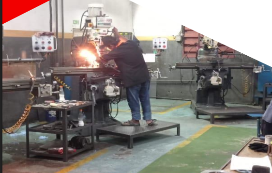
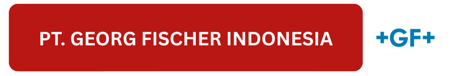
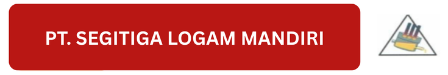
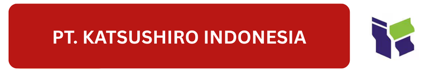
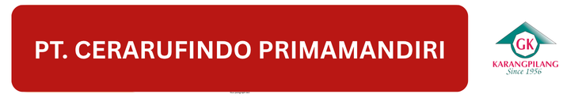

Solusi Fabrication & Machining
Tepat Waktu — Berkualitas
PT. AKSARA MEGAH ABADI bergerak di bidang Machining, Fabrication, Welding, dan General Supplier. Tenaga ahli, peralatan modern, dan komitmen K3 menjadikan kami mitra kerja yang dapat diandalkan.

Workshop & Mesin Modern
CNC Turning, Milling, Welding, lengkap untuk kebutuhan industri.
Layanan & Fasilitas Kami
Berikut daftar fasilitas dan layanan kami dalam bidang machining, fabrication, dan peralatan pendukung industri manufaktur.
Auto-Cad Design & Drawing R-2017 (2D & 3D)
Perancangan komponen dan gambar teknik presisi menggunakan AutoCAD untuk kebutuhan fabrikasi dan manufaktur.
CNC Turning Mazax Nexus-100 (Ø280x350mm)
Proses pembubutan otomatis berbasis CNC dengan tingkat akurasi tinggi untuk produksi komponen presisi.
Milling Machine Cugir-Rumania (400x450x1100)
Mesin frais konvensional untuk pembuatan permukaan datar, alur, atau bentuk kompleks dengan hasil halus.
Milling Machine Conventional (Cap 500x1000mm)
Mesin frais dengan kapasitas besar, digunakan untuk pengerjaan logam skala industri dengan ketelitian tinggi.
Lathe Machine (Poland) 1,5m
Mesin bubut manual untuk pekerjaan poros dan batang panjang, ideal untuk pembuatan as atau komponen silinder.
Lathe Machine (Mazax) 1m
Mesin bubut ukuran sedang untuk proses pemotongan dan pembentukan logam presisi.
Drilling Machine SIN-IL SR-100 (Ø50mm)
Mesin bor konvensional untuk pembuatan lubang pada logam dan baja dengan diameter hingga 50mm.
Arc Welding Machine HPT – Inverter ST-162
Proses pengelasan busur listrik dengan teknologi inverter yang efisien dan hasil sambungan kuat.
MIG Welding (Gas CO₂) 350A – HPT
Las gas CO₂ untuk hasil pengelasan halus pada baja karbon, stainless steel, dan aluminium.
Bench Saw
Gergaji meja presisi tinggi untuk pemotongan bahan logam atau kayu sesuai ukuran proyek.
Air Compressor
Kompresor udara pendukung alat pneumatik dan pembersihan area kerja industri.
Roll Pipe
Mesin pembentuk pipa melengkung sesuai kebutuhan konstruksi dan fabrikasi logam.
TEST 1
TEST 1
Proyek Kami
Catalog Produk
Berikut beberapa dokumentasi produk hasil fabrikasi dan machining dari tim kami, mencerminkan kualitas dan ketelitian kerja PT. Aksara Megah Abadi.
Klien & Mitra Industri Kami
Dipercaya oleh berbagai perusahaan manufaktur terkemuka, fabrikasi presisi, dan konstruksi di Indonesia.




Kontak Kami
Alamat
Bumi Telukjambe Blok J No.321, Karawang